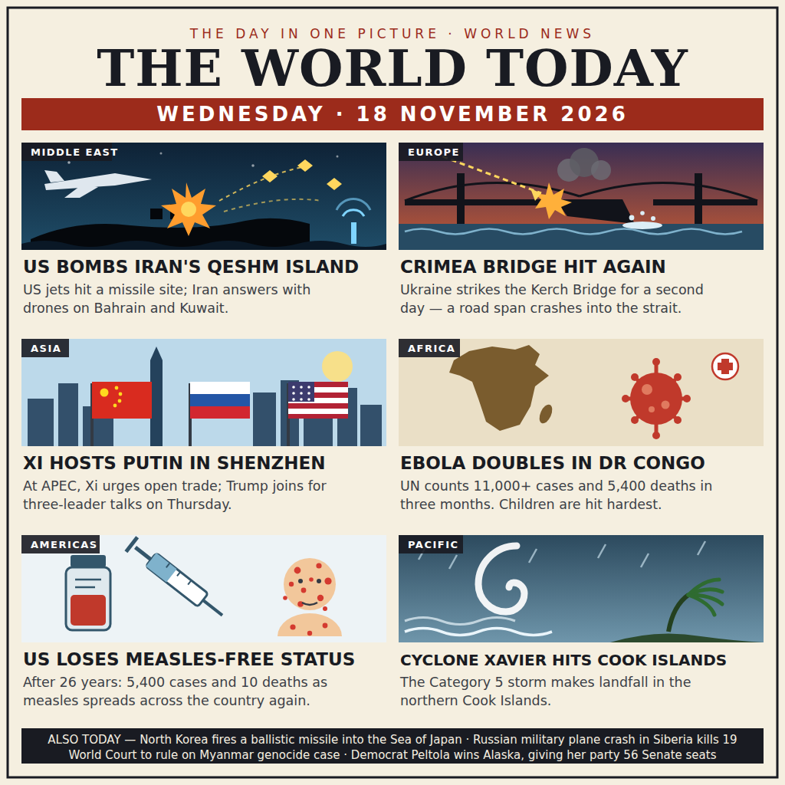

US bombs Iran's Qeshm Island
US fighter jets struck a Revolutionary Guard missile launch site on Qeshm Island. Iran answered with drones against US-linked sites in Bahrain and Kuwait — the third attack on Bahrain in under a week.
THE DAY IN ONE PICTURE · WORLD NEWS
One image, one day. A newspaper front page for Wednesday 18 November 2026: six of the day's biggest stories — war in the Gulf and Ukraine, a three-power summit in Shenzhen, Ebola in DR Congo, measles in America and a Category 5 cyclone in the Pacific — drawn as a single flat-illustration poster.

US fighter jets struck a Revolutionary Guard missile launch site on Qeshm Island. Iran answered with drones against US-linked sites in Bahrain and Kuwait — the third attack on Bahrain in under a week.
Ukraine struck the Kerch Bridge between Russia and occupied Crimea for a second day, and part of the bridge's road span fell into the Kerch Strait.
Xi Jinping received Vladimir Putin in Shenzhen for the APEC summit and called for lower trade barriers. Talks with Donald Trump were set for Thursday — a rare three-leader moment.
The UN said the Ebola outbreak in the Democratic Republic of Congo has more than doubled in three months, passing 11,000 cases and 5,400 deaths. Around Bunia and Beni, three of four infected children under five do not survive.
After 26 years, the United States lost its measles elimination status, with more than 5,400 cases and 10 deaths reported — a first since the early 1990s.
Category 5 Cyclone Xavier made landfall in the northern Cook Islands, the strongest storm of the day anywhere on Earth.
North Korea launched a ballistic missile towards the Sea of Japan, South Korea's Joint Chiefs of Staff reported.
A Russian military plane crashed in the Kemerovo region of Siberia, killing all 19 people on board.
The World Court was set to rule in the Myanmar genocide case, while in Washington Democrat Mary Peltola's Alaska win gave her party 56 Senate seats.